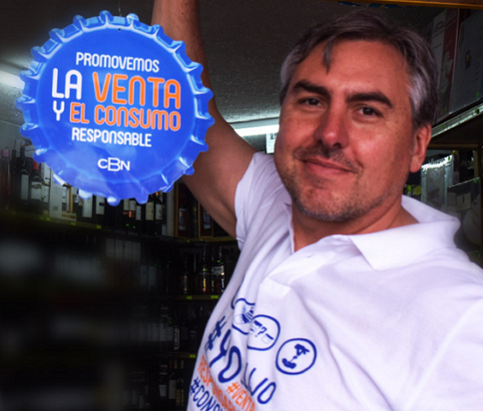
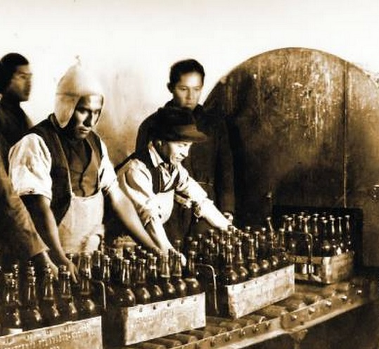

Responsabilidad social
Consumo responsable
Elaboramos nuestras cervezas para que sean disfrutadas responsablemente por mayores de edad y nos comprometemos a promover el consumo inteligente de alcohol, desalentando el consumo excesivo del mismo.Nosotros
En 1886, un grupo de emprendedores alemanes fundó la Cervecería Boliviana Nacional, empresa que en 1920, se convertiría en Sociedad Anónima. Desde 1986 comenzamos una etapa de innovación tecnológica que hasta la fecha, lideran nuestras plantas de La Paz, Cochabamba, Huari, Santa Cruz y Tarija.

Historia
Los antecedentes se remontan a 1877, época en la cual surgió la fábrica de cerveza, propiedad del señor Alejandro Wolf, bajo la razón social de “Wolf & Cía.”, fábrica que posteriormente tomaría el nombre de Cervecería Americana y luego Cervecería Nacional.
| Compartir

| Compartir
| Compartir